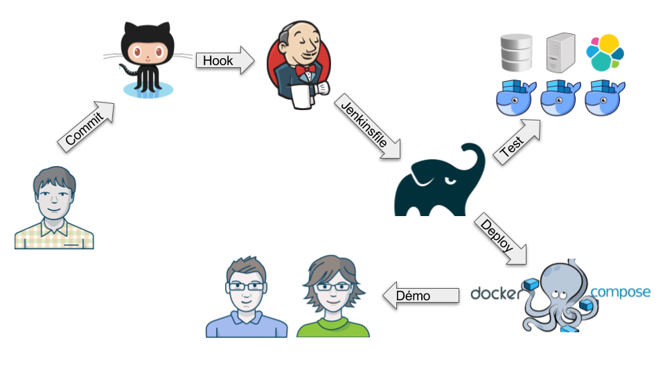
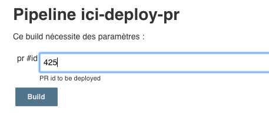

Qui sommes nous?
Laurent Leseigneur
Emmanuel Duchastenier
R&D
Sommaire
Fluidifier la production de la documentation
Fiabiliser les tests d'intégration avec Docker
Faciliter les démos grâce au déploiement continu
Glossaire
Docker
Jenkins
Github
Pull Request
Markdown
Fluidifier la production de la documentation
Frustrations
On ne se sent pas propriétaire du contenu de la doc.
Reports douloureux. Oublis fréquents.
Pas d'aperçu du rendu final avant sa réelle publication.
Personas
RichardUtilisateur (payant / de la communauté) qui lit la doc en ligne. Consommateur du contenu. |
|
MANUDéveloppeur de la R&D qui maintient la doc à jour. Producteur de contenu. |
|
MarielleSupport client / consultant qui fait face aux clients perdus dans la doc. Elle facilite l'amélioration de la qualité du contenu. |
 |
Bénéfices visibles pour nos Personas
Richard
|
doc fréquemment mise à jour une version Bêta sort avec sa doc |
Bénéfices visibles pour nos Personas
Marielle / Manu
|
cycle court de correction et de mise en prod traçabilité des modifications |
|
Bénéfices visibles pour nos Personas
Manu
|
même cycle de travail que sur du code produit: Java, JS, Groovy, etc…
report d’une version sur l’autre simplifié: |
Bénéfices visibles pour nos Personas
Marielle
|
elle s’est formée à Git et aux Pull Request Github |
|
Rebuild la PR si commits complémentaires
Image Docker mise à jour. Feedbacks très courts.
Autonomie de l'équipe
Personas satisfaits
Fiabiliser les tests d'intégration avec Docker
Bonita doit tourner sur
Personas
ManuR&D: En charge du produit et de sa qualité |
|
ChuckIT: L'homme qui parle à l'oreille des serveurs |
Avant
io.fabric8
docker-maven-plugin
0.18.1
<image>
${docker-mysql-image}
root
db.random.port:3306
</image>
Gain pour les Personas
ManuAutonomie, pipeline de test d'intégration fiable |
|
Chucksuppression du bus factor |
Bénéfices
Objectif atteint !
Faciliter les démos grâce au déploiement continu
ICI
Intelligent Continuous Improvement, ou "amélioration continue assistée par l'intelligence artificielle".
Ce module utilise un algorithme de process-mining pour prédire la durée des instances de processus gérées par Bonita.
- Bonita
- Base de données
- Elasticsearch
- Module ICI
Personas
NathalieProduct Owner et ergonome |
|
LuisDéveloppeur front end de la UI mobile |
|
PhilippeSponsor du projet, Product manager |
Nouveau module,
page blanche sur l'infrastructure
- Maven Gradle & Gradle Wrapper
- Intégration Continue Jenkinsfile, Organization plugin
- Test d'intégration et end-to-end Docker
- Déploiement Docker compose
l'outil de build, le job à jouer sur l'Intégration Continue et son déploiement sont dans le même repository GIT que le code source
Big Picture
User Story intégrée dans le produit
Les conteneurs Docker sont déployés
- produit livrable
- base de données pré-remplie
Pull Request en cours de revue
Les conteneurs Docker sont déployés
- tests utilisateur
- notification dans github
- supprimés lorsque la PR est fermée

Bénéfices visibles pour nos Personas
Nathalie / Luis
|
Tests utilisateur avec la user story incluant un changement d'ergonomie |
Bénéfices visibles pour nos Personas
Philippe
|
la dernière version du produit toujours disponible pour une démo un environnement avec des données consistantes |